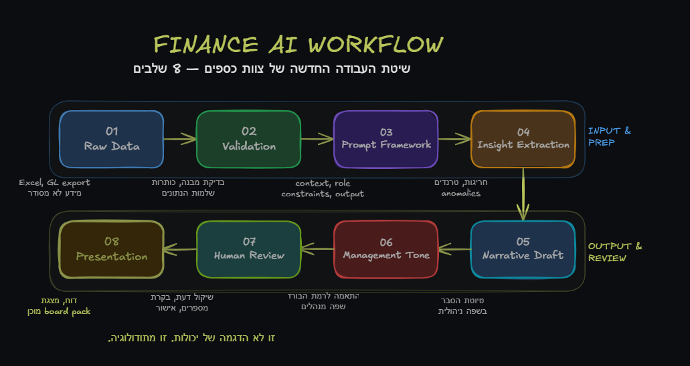
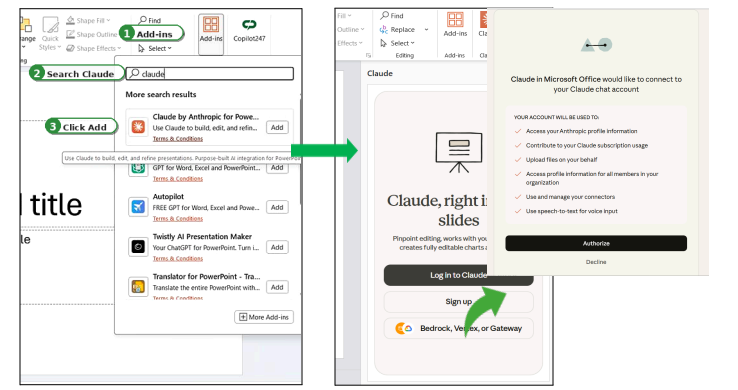

LIVE DEMO
ממשיכים להדגמה חיה 🚀
עכשיו אפתח את Claude בצד שלי ונראה את זה בפעולה ביחד אתכם. תרשמו שאלות, הערות ודברים שתרצו לבדוק בזמן אמת.
בואו נתחיל ←איך הופכים קובץ Excel מבולגן לסיפור הנהלה ברור — בפחות ממחצית הזמן. Workflow, Prompt Architecture ומצגת מוכנה.
רוב צוותי הכספים מבזבזים 80% מהזמן על תרגום: להפוך מספרים לטקסט, ניתוח להסבר, טבלה לשקף. זה לא ניתוח — זה עבודה ידנית שחוזרת על עצמה כל חודש.
בשעה הקרובה לא נסקור פיצ'רים. נבנה שיטה: מדאטה גולמי, דרך prompt architecture, ועד מצגת הנהלה מוכנה.
זו לא הדגמה של יכולות. זו מתודולוגיה מסודרת שהופכת כל קובץ גולמי לתוצר מוכן להנהלה.

לפני שמבינים את הפתרון, צריך להרגיש את הכאב. שתי דרכים לאותה משימה — עם הבדל דרמטי בזמן ובתוצאה.
זה לא רק prompt טוב. הסדר שבו עובדים משפיע ישירות על איכות התוצאה.

חוברת מעשית עם 5 תרחישים ממשיים לצוות כספים: התאמות בנקים, ניקוי STA , מקטלג הוצאות, ניתוח קבצים, בניית דשבורדים ועוד. כל תרחיש כולל setup, prompts מוכנים וקובצי דמו.
חוברת תרגילים ופרומפטים←חוברת מעשית עם 20 תרחישים ממשיים לצוות כספים: variance analysis, board packs, budget builds, scenario comparisons ועוד. כל תרחיש כולל setup, prompts מוכנים וקובצי דמו.
הקמה וחוברת תרגילים ←לא "איזה prompt לשלוח" — אלא איך בונים מבנה prompt שעובד כל חודש, על כל קובץ, בכל צוות.
חישוב השונות בין תקציב לבפועל מציאת חריגות והצגת נתונים צולבים בין רווח והפסד ל OPEX ב-Excel + המרה אוטומטית לסלייד עם הסבר לכל Driver מהותי.
עכשיו אפתח את Claude בצד שלי ונראה את זה בפעולה ביחד אתכם. תרשמו שאלות, הערות ודברים שתרצו לבדוק בזמן אמת.
בואו נתחיל ←מעבר אמיתי מקובץ Excel פתוח למצגת הנהלה — בלי copy paste ידני.
הדמו הכי מעניין הוא לא דמו מושלם. נראה מה קורה כשנותנים ל-Claude קובץ אמיתי — לא מסודר, לא מושלם, עם בעיות מבנה — ואיך הוא מתמודד.
כדי ש-Claude באמת יעבוד לכם במחלקת כספים — צריך לא רק להתלהב, אלא גם לעבוד מקצועית: להבין גבולות, לשמור על בקרה, ולהשתמש בו במקום הנכון.
Claude לא מחליף רואה חשבון. הוא מחליף את החלק האיטי, הידני והחוזר — כדי שתוכלו להשקיע יותר זמן בניתוח ובשיקול דעת.
ארבעה תרחישים אמיתיים שבהם Claude + Excel מייצרים ערך מיידי — בלי לחכות לפרויקט ארוך.
המטרה של המפגש הזה היא לא ללמוד עוד פיצ'ר. המטרה היא לצאת עם שיטה אחת ברורה ולהתחיל להשתמש בה כבר בסגירת החודש הקרובה.
לא הספקתם להשתתף בשידור החי? לא נורא — הקלטת וובינר מלאה זמינה כאן.
🎬 כאן תיהיה ההקלטה
PLACE HOLDER — Recording URL יעודכן בקרוב
בוובינר 3 נבנה Artifacts אמיתיים: dashboards, templates, calculators ו-outputs שאפשר לשתף, לערוך ולהשתמש בהם שוב — לא רק תשובות טקסטואליות.
להרשמה לוובינר 3 ←